ムクゲが開花中です。
2024/06/28
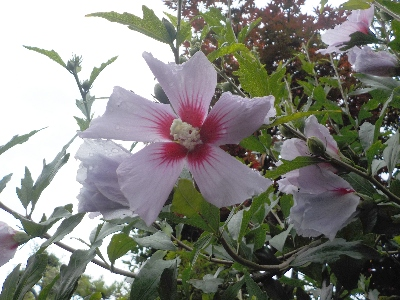
地植えの大きいものは咲きましたが、鉢植えのものはまだ咲く気配がありません。
鉢が小さいとダメなのかな。小さいサイズで咲いて欲しいんだけどな。
2024/06/28

地植えの大きいものは咲きましたが、鉢植えのものはまだ咲く気配がありません。
鉢が小さいとダメなのかな。小さいサイズで咲いて欲しいんだけどな。
2024/05/29
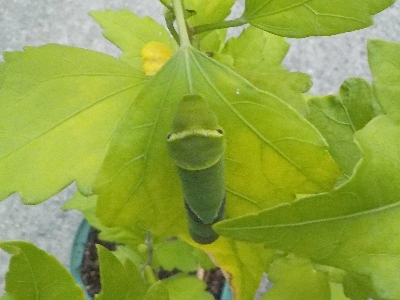
葉っぱは食べられてないです。なんでここにいるんでしょう。
ただの移動中かな。
2022/08/30
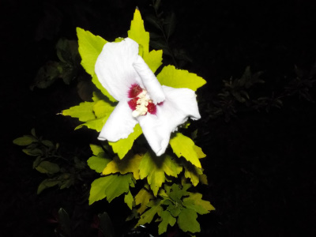
2019年に採取した種が2022年に咲きました。
うれしかったので夜ですが写真を撮りました。
実生なので親木とは違う花が咲くかも？と期待していたんですが、同じ花でした。まあ、こんなもんでしょう。
2021/09/26
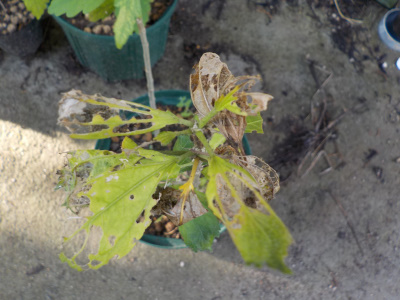
気付いたら葉っぱが食べられていました。
大きい木は食べられる感じがしないんですが、小さいムクゲはよく食べられている気がします。
2021/08/13
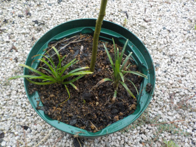
実生のムクゲはまだ花が咲く感じがしないです。
棒のような木が1本立ってるだけで寂しいので、グランドカバーに龍の髭を植えました。
2021/06/20
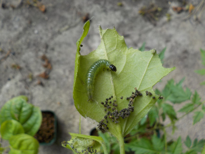
何の幼虫でしょうね。
検索したらワタノメイガって蛾の幼虫にたどり着きました。
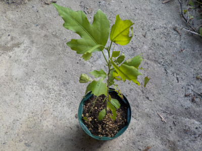
虫食いになってなんかかわいそうなので、鉢を大きくしました。
これで成長しやすくなるでしょう。
2020/09/27
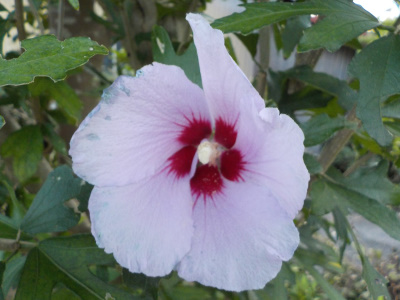
もう時期が終わりそうです。
花の写真を撮っていなかったので記念に撮りました。
種を育てているムクゲの親木はこんな感じです。
2020/04/12
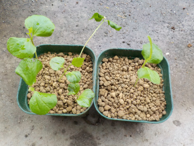
お茶パックで育てていたムクゲが窮屈そうだったので、植え替えしました。
2020/03/14
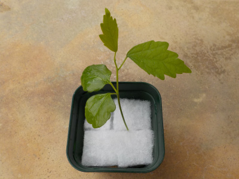
ムクゲを1本屋外に出しました。
寒さと日差しに勝てるかな？
そもそも水耕栽培で育つかわからないですけど。
2020/02/11
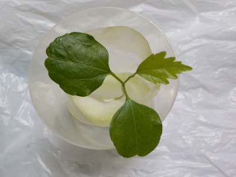
順調に背が伸びています。
今10cmくらい。
2020/01/26
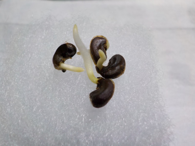
あんまり沢山あっても育てれないので、これでもう十分です。
発芽率高かったです。
2020/01/11
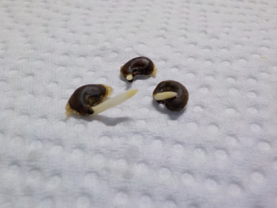
同じ環境で育てていますが、根が出るタイミングはそれぞれのようです。
2019/12/28
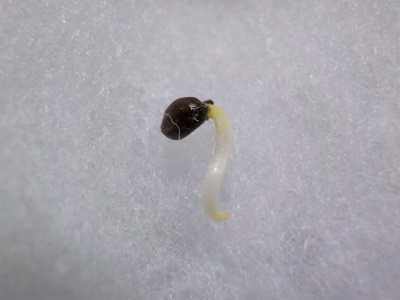
一個だけ根っこが出ました。
湿ったキッチンペーパーからウールマットに移動させました。
2019/12/01
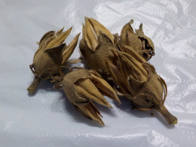
庭木から種を採りました。
とりあえず濡れたキッチンペーパーで包んで保存します。
種から木を育てます。